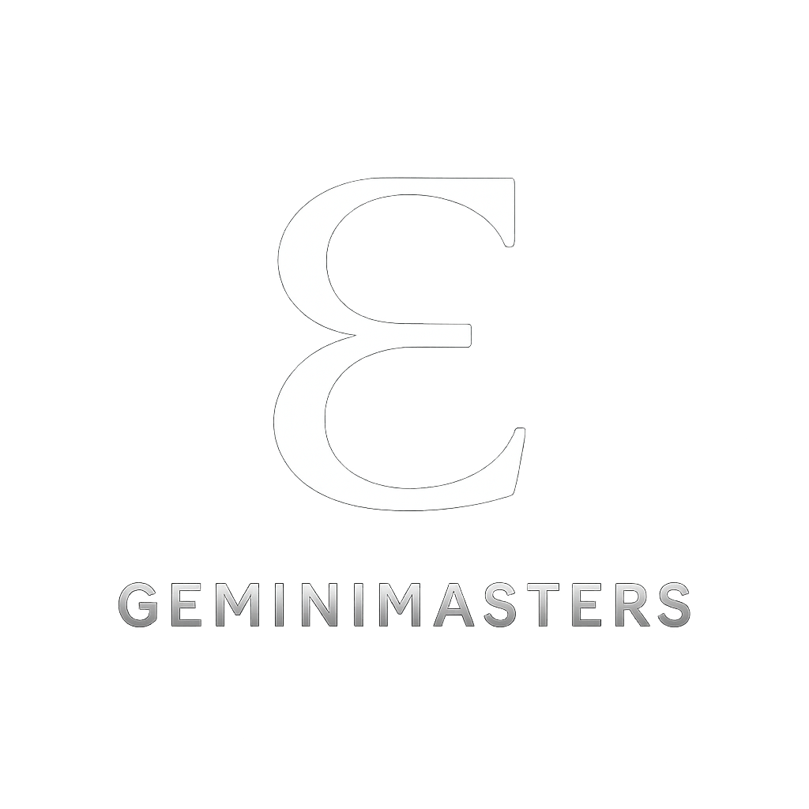

A unified reading in The Master's Voice – Western Astrology, Human Design, Vedic Astrology, BaZi, and Numerology aligned into one, coherent and personalised map. Not a forecast. A rediscovery of the cosmic design that has always been yours.
Western astrology describes your lived personality and life themes — how your psyche expresses itself through archetype, relationship, and choice.
Your purpose is to give structure to ideas and make your creativity useful without making it lifeless. The fifth-house Sun points toward authorship, teaching, performance, or other forms of deliberate self-expression. The Gemini Moon in the tenth brings a public path shaped by communication, learning, and the ability to respond to changing needs. With the North Node in Virgo in the first house, your contribution grows as you become more specific about what you know and what you stand for. You are here to lead through practiced skill and clear judgment, not through perfection or constant approval.
Your chart places strong attention on self-expression, public contribution, and personal standards. Capricorn in the fifth house wants creative work to be meaningful and well-made; Gemini Moon in the tenth needs variety, conversation, and a sense that your public role is still growing. When responsibility takes over, you may postpone pleasure until everything is finished. When curiosity takes over, you may scatter energy across too many interests. Mars, Jupiter, and Saturn in Virgo in the first house intensify your focus on improvement. You may feel responsible for correcting flaws before you let yourself be seen. In daily life, this can look like high competence paired with private self-criticism, or a strong desire to contribute paired with frustration when progress is not immediate.
Your North Node is in Virgo in the first house, with the South Node in Pisces in the seventh. Growth asks you to trust your own discernment, define your needs clearly, and take practical action without waiting for another person to provide certainty. Relationships remain important, but they are not meant to replace your own judgment. Saturn in Virgo in the second house adds a long lesson around self-worth, resources, and what you believe you must prove before you can feel secure. Your edge is to build confidence through steady choices rather than relentless self-correction. Precision serves you best when it supports action, not when it becomes a reason to delay.
You can combine patience with quick perception. Capricorn helps you commit to a goal; Gemini helps you find fresh language and possibilities; Leo rising gives warmth and presence; Virgo adds practical intelligence and care for the details that make an idea work. When you trust these strengths, people experience you as capable, engaging, and discerning. You can make complex subjects easier to understand, notice what needs attention, and bring both creativity and follow-through to a shared effort.
The South Node in Pisces in the seventh can draw you toward relationships where empathy becomes over-accommodation. You may sense what another person needs quickly, then lose track of your own limits or leave important decisions unresolved. The repeating lesson is not to become less compassionate; it is to pair compassion with clear agreements and honest self-definition. Pluto in the third house points to intensity around communication, learning, and the stories you carry from early environments. Words may feel consequential, and you may notice what others avoid saying. Uranus and Neptune in the fourth house can add complexity to your sense of home or belonging, encouraging you to create an inner foundation that is yours rather than inherited from old expectations.
You do not need to earn the right to create by making every detail flawless. The Capricorn Sun gives you discipline, while the fifth house asks that discipline to serve joy, expression, and the courage to share what is still developing. Your sensitivity to other people is real, but it does not require you to absorb their uncertainty. Clear limits are not a withdrawal of care; they are what allow your care to remain honest and sustainable.
Human Design maps your energetic mechanics — how your system is built to make decisions, use energy, and move through life with less resistance.
You are here to meet meaningful demands with energy, experience, and a clear sense of what you can genuinely offer. Your contribution is not to answer every call; it is to recognize what engages you, allow your emotional clarity to develop, and then bring your response into action. Through experience, you can help others see what a change asks of them and how past events can become understandable. Your agreements and relationships can model a practical form of care: commitment with boundaries, contribution with reciprocity, and intimacy that respects timing.
Your main challenge is the pressure to act quickly because your energy is available, your voice can carry momentum, or other people expect an answer. As an Emotional Authority, you are not designed to treat an immediate feeling as final clarity; important decisions need time to move through your emotional wave. Your defined Head and Ajna can keep working on questions long after a useful answer has emerged, while your defined Heart can make promises feel like tests of worth. Your G, Spleen, and Root are undefined, so you may take in and amplify pressure around identity, safety, or urgency. Notice when you are trying to prove yourself, settle uncertainty, or match someone else’s pace instead of responding to what is actually in front of you.
Your growth comes from letting response and emotional clarity work together. Wait for something concrete to meet your Sacral response, then give significant choices enough time for your emotional wave to settle; you can inform people affected by your actions without letting their urgency decide for you. The 6/2 profile asks you to learn through direct experience and to protect the solitude that lets your natural abilities mature. You may be called into visible roles before you feel fully ready, but your strongest influence comes from what you have actually lived, not from performing certainty. The Left Angle Cross of Demands 2 points toward engaging with real demands and bringing your particular response to them—not accepting every demand placed on you.
Your defined Sacral gives you dependable energy when you are engaged by the right work, and your defined Solar Plexus brings emotional depth and a capacity to experience change from the inside. The defined Throat helps you express and act on what has become clear, while the defined Heart supports willpower and the ability to make meaningful commitments when those commitments are truly yours. The 35–36 channel can make you a compelling voice for experience and transition; the 37–40 channel supports loyalty, community, and fair exchange. The 47–64 channel can turn a jumble of impressions into insight over time, and the 6–59 channel supports closeness when trust and boundaries are respected. When aligned, others may experience you as energetic, emotionally honest, resourceful, and able to make sense of change without pretending it is simple.
The 6–59 channel can create powerful closeness and a drive to break through distance. In relationships, that can become a pattern of moving quickly into intimacy or expecting access without first establishing mutual comfort; the 6–59 connection also makes boundaries and timing central to how closeness develops. With the 37–40 channel, care and loyalty often come with an instinct for agreements and reciprocity. At work or at home, resentment can build when you give more than you agreed to give, or when a promise is made from emotional pressure rather than clarity. Your undefined G may lead you to adapt your direction or self-presentation to the people around you, while your undefined Spleen can make familiar situations feel safer than they are; your undefined Root may amplify the urge to finish, decide, or escape pressure quickly.
Your first response is useful information, not always the final decision. Let it register, then wait for emotional clarity before making commitments that matter. You do not need to solve every question in your mind before life can move. The 47–64 channel can bring understanding after experience has had time to settle, so confusion does not mean you are failing. Your capacity for closeness is strongest when mutual boundaries are clear. Care is not measured by how much you endure, and a promise is more trustworthy when it leaves room for honest rest.
Vedic astrology reveals your karmic blueprint and life timing — showing what ripens beneath the Western chart through dharma, karma, and dasha cycles.
Your purpose is to use presence responsibly. Leo rising can bring leadership, while the Sagittarius Sun seeks meaning and a wider understanding. The first- and fifth-house emphasis supports contribution through initiative, teaching, creative work, or guiding others with ideas that have been tested in lived experience. The second-house emphasis makes the use of speech and resources part of that responsibility. Your influence grows when you communicate plainly, value what is lasting, and use authority to strengthen rather than diminish others. The measure of your leadership is not how much attention it attracts, but what becomes more capable and clear because you were there.
You are in Saturn Mahadasha, running from November 30, 2024, to December 1, 2043. This is a long period of accountability, patience, and consequence. It can make progress feel slower or heavier, but its central demand is practical: build what can endure, and accept the responsibilities that genuinely belong to you. The chart emphasis on houses 1, 5, and 2 brings identity, creative intelligence, values, speech, and resources into focus. The supplied house highlights place Jupiter, Mars, and Rahu in the first house, and Mercury and the Sun in the fifth. This can give strong drive and presence, alongside pressure to prove yourself or act before you have considered the full cost. Saturn’s work is to make confidence dependable rather than reactive.
Your edge is learning to distinguish discipline from self-punishment. Leo rising can make personal responsibility feel inseparable from personal worth, while the Taurus Moon wants to preserve what is secure. Saturn asks you to keep your commitments, but also to examine which commitments are rooted in duty and which are attempts to earn approval or avoid change. The fifth-house emphasis points toward mature use of intelligence, creativity, and conviction. Your ideas matter, but they need patience, study, and honest revision. Saturn’s long cycle favors the work you keep returning to, not merely the work that wins immediate recognition.
The Taurus Moon in Rohini offers persistence, sensitivity to quality, and an instinct for helping growth take root. You may have a gift for recognizing what needs care and for turning a promising idea into something tangible. Its strength is most evident when you allow change to happen at a sustainable pace rather than insisting that everything remain familiar. Jupiter’s highlighted position in the first house can support generosity, perspective, and a capacity to encourage others. Mars adds initiative, and Mercury with the Sun in the fifth supports learning, expression, and purposeful creativity. These are strong resources, not guarantees: they serve you best when Saturn’s patience tempers urgency and confidence remains open to correction.
BaZi reveals your elemental constitution and life cycles — showing how resources, pressure, and timing interact so you can work with the seasons of your fate.
Your chart points toward contribution through careful judgment, dependable knowledge, and work that benefits from both integrity and patience. Yin Metal gives you an eye for refinement; strong Earth helps you sustain what you build; the Officer and Resource themes support service, expertise, and responsible leadership. Your contribution grows when you pair that reliability with more Wood-like initiative: developing new possibilities, advocating for your value, and allowing your work to expand beyond familiar duties. You are not here only to maintain what others have established. You can improve it, and you can choose what is worth building next.
Earth produces Metal, so the chart gives your Yin Metal substantial backing. Yet five Earth elements can become heaviness: preparation that stretches on, loyalty to established duties, or a sense that you must be fully ready before you can move. Wood, which is less emphasized, represents the element that can introduce growth, initiative, and the practical pursuit of resources. Starting something new or naming what you want may therefore take more deliberate effort than maintaining what already exists. The Direct Officer theme can bring pressure to be dependable, correct, and accountable. Direct Resource supports learning and careful preparation, while Indirect Resource adds an instinct to gather insight and seek context. Together, these qualities serve you well, but under stress they can turn into overthinking or waiting for approval. The challenge is to meet real obligations without treating every expectation as a measure of your worth.
Cultivate Wood through concrete acts of growth: set a modest goal, choose a first step, and give it a date. Practice asking for fair compensation, stating a preference, or pursuing an opportunity before you feel completely certain. These actions help turn your good judgment into movement rather than further preparation. Let Earth support you without letting it harden into inertia. Keep the routines and learning that genuinely strengthen you, and release duties that persist only because you have always carried them. Your Yin Metal matures through discernment: knowing what deserves your care, and what can be left unpolished.
You can bring calm structure to complicated situations. Strong Earth supports consistency and follow-through, while Yin Metal adds precision and the ability to distinguish what is sound from what merely looks impressive. Direct Resource supports learning and thoughtful preparation; Indirect Resource can help you draw useful meaning from experience and less obvious sources of insight. The Bing Fire Direct Officer adds a clear sense of duty and professional standards. At its best, this gives you principled leadership: you can hold a line without losing fairness. Your gift is not simply to carry responsibility, but to make responsibility more thoughtful, workable, and worthy of the people affected by it.
The two Wei branches in the year and day pillars, together with Xu in the hour, reinforce a pattern of holding responsibility close. You may become the steady person others rely on, then find it difficult to admit when the arrangement has become one-sided. In close relationships, care can show up as practical support and loyalty, while your own needs remain unspoken until frustration builds. At work, Direct Officer and Direct Resource can draw you toward roles that reward competence, knowledge, and trustworthiness. The repeating risk is to equate being valued with being useful, or to keep refining your work instead of asking for recognition and room to grow. Your chart’s low Wood emphasis makes it especially important to notice whether you are choosing a path because it is alive for you, or simply because it is familiar and responsible.
The strong Earth in your chart is not a flaw to overcome. It gives you steadiness, memory, and the ability to build reliable foundations. Its cost appears when support becomes weight and preparation replaces choice. You do not need to reject your careful nature; you need to let it serve decisions rather than postpone them. Your standards are useful when they clarify what matters. They become costly when they make ordinary uncertainty feel like failure. You can be responsible and still revise your direction, ask for help, or begin before every detail is settled.
Numerology translates your soul’s frequency into a life path — clarifying your core drives, lessons, and the kind of impact you’re here to mature into.
Your Life Path 5 and Expression 4 point toward a purpose that combines adaptability with practical contribution. You can meet changing circumstances, identify what is useful, and turn ideas into something people can rely on. The 9 at your center of desire and maturity gives that work a human concern. Your purpose is not simply to stay busy or to build for its own sake; it is to use your experience and skills in ways that make life more workable, generous, or open for others.
No current cycle number is available, so the clearest challenge comes from the tension between your Life Path 5 and Expression 4. You may want a fresh direction while also wanting a solid plan before you move. Waiting for perfect certainty can make you feel confined; acting on every impulse can unsettle the foundations you have worked hard to build. Your Soul Urge 9 adds another pressure: you may feel responsible for people or causes beyond your immediate reach. The challenge is to care without overextending yourself, and to make room for change without abandoning what genuinely matters.
Your growth comes from making freedom and commitment work together. Let the 5 explore, but give its discoveries a form through the 4: a clear plan, a useful skill, or a project you can sustain. Structure serves you best when it supports movement rather than restricting it. The 9 invites you to widen your concern without losing sight of your own limits. You do not have to solve every problem to contribute meaningfully. Your next step may be to choose the work where your curiosity, reliability, and compassion can meet.
Your 5 brings curiosity, flexibility, and an ability to learn through direct experience. You can often adjust when plans change and notice possibilities others overlook. The 3 Birthday supports communication and creative expression, helping you make ideas accessible and engaging. Your double 4 gives you follow-through, practical sense, and the capacity to make progress through consistent effort. The 9 adds empathy and perspective. Together, these gifts can help you turn broad concern into concrete help without losing your ability to adapt.
The chart does not identify a specific karmic debt number, so no debt pattern should be assumed. A recurring theme is the contrast between the adaptable 5 and the steady 4, which can show up as cycles of seeking change, then rebuilding certainty. You may also alternate between wanting to handle everything yourself and feeling pulled toward the needs of others. Notice when responsibility becomes rigidity, or when a desire for freedom becomes a way to avoid a necessary commitment. These patterns are not flaws; they are signals to bring your choices into better balance.
Your numbers describe someone who needs both movement and dependable ground. If routine feels stifling, it does not mean you lack discipline; your 5 needs room to respond to life. If uncertainty makes you reach for a plan, your 4 is helping you create stability. The Vector moves from 9 to 4 to 5 to 9: compassion informs your building, your building supports exploration, and experience can return you to a broader sense of service. You are not required to choose between personal freedom and care for others. The work is to let each strengthen the other.